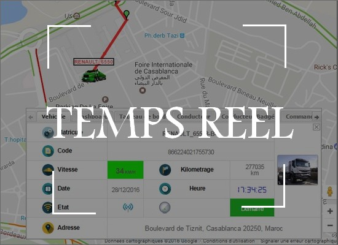
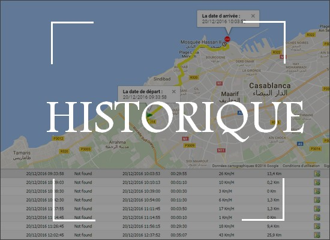
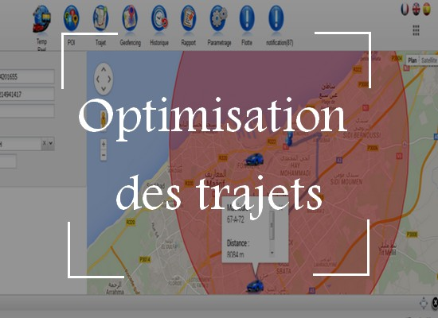

|  |
Temps réel
Visualisation instantanée de toute la flotte avec un temps d’actualisation de 5 secondes : |
Historique
Consultation de l'historique et de l'ensemble des actions effectuées par vos véhicules : |
 |
Rapports
Générer Plusieurs types de rapports, tableaux de bord et programmer l'envoi automatique des rapports : |
|
Optimisation des trajets
Afin de mieux optimiser vos déplacements, le système vous offre les fonctionnalités suivantes :
|
 |
SECURITE
Afin d’assurer la sécurité du conducteur et minimiser les sinistres, le système génère des alertes automatiques et instantanées :
|
|
COMPORTEMENT DES CONDUCTEURS
Controler la facon de conduite de vos conducteurs afin de proteger et garder vos vehicules en bonne état, et éviter les accidents : |
PRODUITS
Cette appareil conçu pour la surveillance de véhicules avec GPS.
Unité de suivi de flotte économique réalisant en temps réel des traces.
Un GPS très avancé pour tous les types de véhicule.
Un GPS tracker qui est capable de surveiller la localisation du véhicule.
Obd2 facile à instaler
Un dispositif de suivi GPS conçu pour le suivi des véhicules.
Un dispositif conçu pour relier l'équipement de suivi GPS à l'ordinateur de bord du véhicule.
Ce détecteurs de porte enregistre les événements d'ouverture et de fermeture de la porte.
Ce capteurs est conçu pour mesurer la température de la cargaison et des réfrigérateurs.